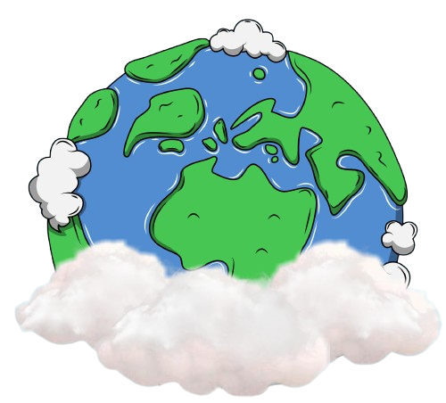

Baby Step Earth
Sustainable Development Goals (SDG's) adalah sebuah rencana global yang
bertujuan untuk
menciptakan pembangunan berkelanjutan di berbagai bidang sehingga masalah masalah global yang
sedang terjadi dapat teratasi dan berkembang secara berkelanjutan. salah satu aspek penting dari
SDG's adalah menjaga kesehatan atmosfer kita dengan Gerakan “Baby Step Earth”.